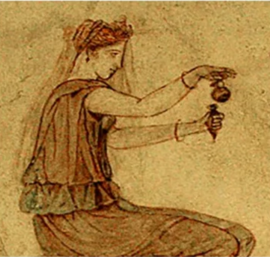

|
 | Узнать больше | История парфюмерии началась еще в Древнем Египте: местное население жгло благовония в храмах, использовало ароматические масла в качестве защиты кожи от солнца. Греки первыми стали делать жидкие духи, помещая растения в холодные или горячие масла. В ход шли мирра, фиалка, ладан, корица и кедровое дерево. На Востоке научились добывать масла из цветов, появилась известная на весь мир розовая вода. | Узнать больше | |
| Появление парфюмерии в Древнем мире. | Узнать больше | Парфюмерия— совокупность изделий, применяемых для ароматизации тела человека, одежды, белья и воздуха в помещениях. Изначально понятие «парфюмерия» относилось к веществам, применяемым для благовонного окуривания воздуха, в том числе в религиозных культах. Также под парфюмерией понимается отрасль производства, основанного на научных знаниях по сочетанию запахов. Парфюмерия выполняет не только самостоятельное эстетическое назначение (в духах, одеколонах), но и является частью многих других товаров: косметических (лосьон, крем), средств личной гигиены (мыло, зубная паста) и бытовой химии (стиральный порошок, бытовые средства для мытья посуды, стёкол, сантехники). | 
|
||